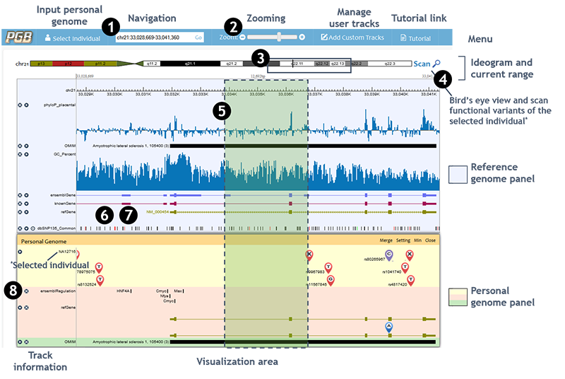
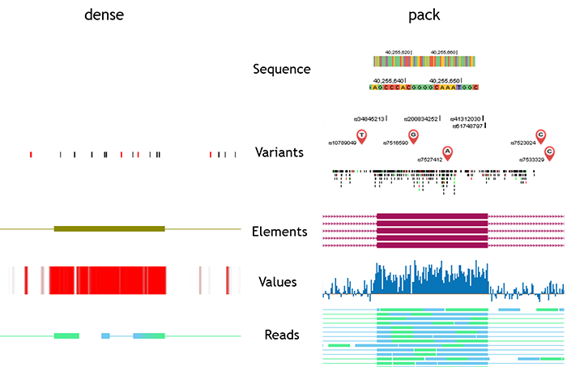
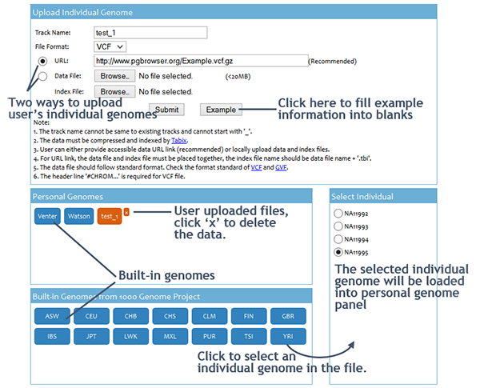
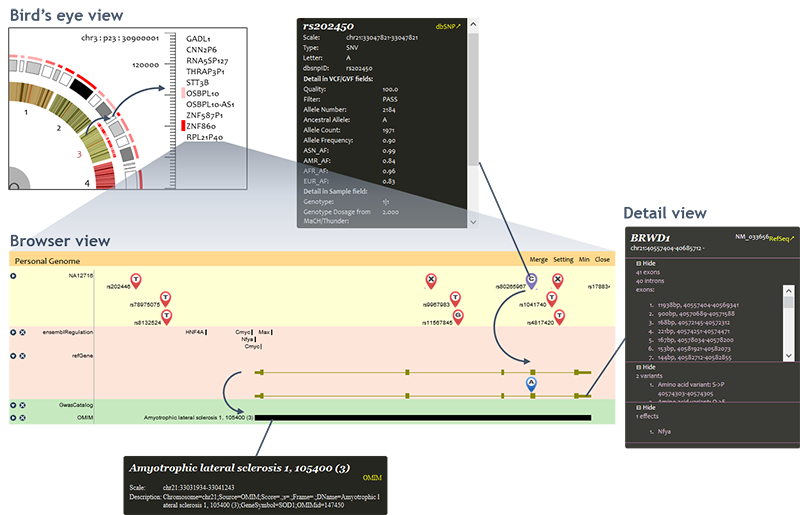
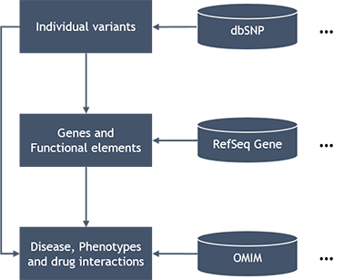
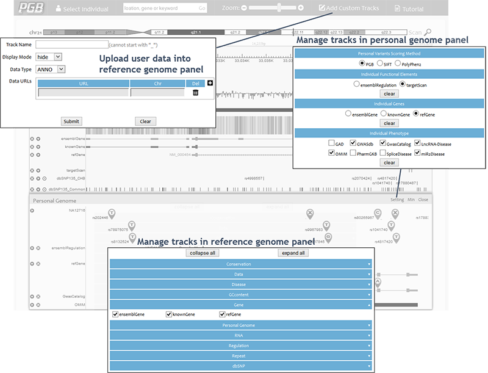
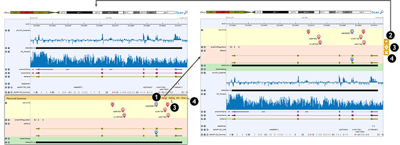

Tutorial -
Personal Genome Browser
DESCRIPTION
The Personal Genome Browser (PGB) is developed to provide comprehensive functional annotation and visualization for individual genomes. The PGB leverages the genetic-molecular-phenotypic framework (1). It allows investigators to easily view individual genetic variants, as well as diverse genomic features and phenotypes associated to the individual genetic variants. The PGB can especially highlight individual genetic variants that have potential functional implications, and report the potential functional variants distribution of the input personal genome based on PGB built-in method and integrated ANNOVAR (2) tool.
The PGB is best accessed using Google Chrome, and works smoothly as well with other web-browsers, including Mozilla Firefox, Safari, Microsoft Internet Explorer (Version 10 or later), Opera, etc. HTML5 Canvas is used as the graphic engine to plot the visual elements, thus some earlier versions of web-browsers that do not support HTML5, such as IE6-9, are not compatible with the PGB.
The PGB can also be easily deployed on a user's server. The local install package of PGB is available at Here. A few basic supporting data/tool is required for the PGB local installation, such as reference sequence, cytoBand, SNP database, HGNC Genes, refSeq genes annotation, and Annovar program with SIFT and PolyPhen2 score databases. Tomcat6+ and JAVA is also needed for PGB running. Detailed instructions can be found in the package.
CONTENTS
Basic operations
Visualization elements of five types of tracks
Input personal genomes
Interpetation of output results
Processing method
Settings
Combine individual genome panel and reference genome panel
Authors
References
BASIC OPERATIONS

1. Navigation • Navigation by chromosome coordinates chr1:1234-5678 √
chr1:1,234-5,678 √
Chr1:1234-5678 x
chr1 1234 5678 x
1:1234-5678 x• Navigation by gene symbol Auto-complete √
Case-insensitive √2. Zooming • Zooming by '+' or '-' buttons '+': Zoom in; '-': Zoom out • Zooming by slider Left: Zoom out; Right: Zoom in 3. Navigating to interested browsing region by clicking and dragging the cursor on chromosome ideogram 4. Using whole genome bird's eye view to select a region Move the mouse on visualization area, when the mouse icon change to'', then, 5. Holding the 'shift' and using cursor to select a region to zoom in* 6. Holding the 'z' key and scrolling the mouse wheel to zoom out/in* *These operations may be invalid if the hotkey is occupied by browser plugins or other programs. 7. Dragging the visualization area in either direction to move left or right within the current zoom level 8. Clicking 'x' button to hide a track. Clicking 'right/down triangle buttons' to change track display mode (dense/pack)

VISUALIZATION ELEMENTS OF THE FIVE TYPES OF TRACKS
Genomic data in different formats are displayed by five track types in PGB, including sequence, variants, elements, values, and reads. Sequence type has one display mode. Other four types have two display modes: dense and pack.
In sequence track, the reference genome is a sequence of bases, which are denoted by different colours and letters.
In variants tracks, genomic location and alleles are fundamental information about genetic variants. In individual genome panel, differently coloured symbols with labels are used to indicate the location and alleles of variant. Symbols in red indicate non-functional variants, and purple ones indicate functional variants. Symbols of large scale SVs are placed in the middle of the SV region. Similar with the UCSC Genome Browser, when there are large number of variants within the browsing region, the symbols are replaced by short vertical lines (or bands if the variants cover large regions). Different types of variants are denoted by different colours: SNVs are black, insertions are red, deletions are green, and SVs are blue. Users can then get an overall view of browsing region. Variants tracks in dense mode are also displayed in this colour scheme.
Elements tracks describe the genomic features in discrete regions. The attributes of the features, such as exon, intron, coding region, direction, etc., are denoted by different shapes.
Values tracks describe features of genomic position/region, including conservation, gene expression level, reads enrichment, DNA methylation, Histone modification, and GC content. Heatmap and histogram are adopted to display the values of these features.
In reads tracks, high-throughput sequencing (HITS) reads data are displayed in two different views. If each read is legible, all reads are shown separately in the browser. If reads are illegible, reads coverage are shown using heatmap or histogram.
INPUT PERSONAL GENOMES
User can click the 'Select Individual' button on the menu bar to submit input data to the PGB. The input of the PGB is personal genome variants file. The PGB accepts Bgzip/Tabix (3) compressed/indexed VCF (4) and GVF (5) files. User can either provide accessible data ULR link or upload data and index files from local. Using URL link is recommended. The volume of files can be locally uploaded is limited to 20MB.
Input data can only be accessed and viewed by the owner, and the PGB will NOT record any information of user data. The uploaded files will be automatically deleted as soon as the session expired. Moreover, PGB uses the HTTPS protocol to provide encryption during data transmission. Users can visit https://www.pgbrowser.org:8443/ to access PGB. If the web browser warning This Connection is Untrusted, pleass add the PGB as an exception in the browser security settings.
Users can also browse built-in genomes for comparison. We currently hold over a thousand individual genomes in the PGB server. Most of them are downloaded from 1000 genome project website (6).
INTERPRETATION OF OUTPUT RESULTS
The input personal genome and functional analysis results are visualized in three scales: bird's eye view, browser view, and detail view.
• Bird's eye view
Bird's eye view is a clock-like personal genome view. Inner circle indicates chromosomes. When a chromosome is selected, the cytobands of selected chromosome are displayed in outer circle. Functional variants distribution is shown by circular heatmap in which color gradients reflect number and functional significance of the variants in the region. User can scan functional variants in whole genome or selected chromosome/cytoband region. Typically it may take several seconds to scan a cytoband. However, the scanning time varies due to the network condition and length of region.Furthermore, the PGB provides gene ranking and filtering functions to facilitate users to investigate the individual variants. A ranking function is provided in the bird's eye view, to rank functional effects of genes by scores. The ranking result is displayed in descent order in a pop up window based on the scan result. The number of genes to be ranked and displayed can be specified by users.
Filter function is also provided in the bird's eye view. Given a user specified threshold, only genes and cytobands with scores over the threshold are labelled in red in the circular heatmap. Users can easily focus on interested genes by filtering out genes with lower functional effects scores.
• Browser view
Individual genome panel displays the input genome variants and their functional consequences. As long as the variant icons are displayed, functional variants are highlighted by purple variant icons. The amino acid changes caused by the personal genome variants are real-timely analyzed and annotated based on gene annotations. Disease and phenotypes that related to personal genome variants or changed genes are displayed at the bottom. Please notice that the browser view of individual genome panel does not show variants and annotations when the region is larger than 1,000,000 bases due to performance and legibility considerations.• Detail view
User can click on displayed objects (variants, genes, ...) to open the detail view of them.
For personal genome variants, the PGB query dbSNP database based on variant position, and merge dbSNP (7) record into the original information of the variants files.
For 'personal genes', the PGB highlights amino acid changes and neighborhood broken TF binding motifs caused by personal genome variants.
Clicking on top-right corner link will redirect to the annotation source.
PROCESSING METHOD
Basically the PGB map personal genome variants to genes and functional elements, and then map those to diseases, phenotypes and drug interactions, which is the standard approach of variant annotation (1). Various annotations and knowledge bases, such as dbSNP , RefSeq Gene, UCSC knownGene, ensembl Gene, OMIM, GwasCatalog, PharmGKB, etc., are integrated in the PGB for personal genome variant analysis and annotation (7-12).
Particularly, we developed a fast, rule-based approach for annotating transcriptional and translational implications of personal genome variants based on the variant position/type and gene annotations. Different functional role of variants, such as synonymous, non-synonymous, frame-shifting, stop gain/loss, splicing donor/accetpter loss, etc., contribute different 'functional risk scores' to the gene they located in. This approach enable the PGB to evaluate functional risk of a gene on-the-fly by the risk scores of the individual genetic variants it covers. The PGB also supports using integrated SIFT (13) and PolyPhen2 (14) scores for functional variants evaluation. The SIFT/PolyPhen2 scores are real-timely retrieved from dbNSFP (15) databses by ANNOVAR (2) tool.
SETTINGS
• Tracks in reference genome panel can be managed by checkboxes below the reference genome panel.
• To manage tracks displayed in individual genome panel, click the 'Setting' button on individual genome panel controls.
• User can add custom tracks to reference genome panel via the 'Add Custom Tracks' window. Only URL accessible data can be linked into the PGB.
COMBINATION OF INDIVIDUAL GENOME PANEL AND REFERENCE GENOME PANEL
Users can combine individual genome panel and reference genome panel together by merge option.
1. Clicking on 'Merge' button on the individual genome panel controls, the individual genome tracks are displayed in the reference genome panel, and a group of controls appears on the right side. 2. Clicking on the '<=' button, the individual genome tracks are removed from the reference genome panel and the individual genome panel is restored. 3. Clicking on the 'Gear' button, users can set up the individual genome tracks, which is the same as the 'Setting' button in the individual genome panel controls. 4. Users can use the 'x' button to remove individual genome tracks, which is the same as the 'Close' button in the individual genome panel controls.
AUTHORS
Liran Juan, Mingxiang Teng, Tianyi Zang, Yafeng Hao, Chengwu Yan, Zhenxing Wang, Yongzhuang Liu, Jie Li, Tianjiao Zhang and Yadong Wang*
Center for Bioinformatics, Harbin Institute of Technology, Harbin, Heilongjiang 150001, China.
Please do not hesitate to address comments/questions/suggestions regarding this webpage to: pgbrowser@gmail.com.
REFERECES
1. Ashley, E.A., Butte, A.J., Wheeler, M.T., Chen, R., Klein, T.E., Dewey, F.E., Dudley, J.T., Ormond, K.E., Pavlovic, A. and Morgan, A.A. (2010) Clinical assessment incorporating a personal genome. The Lancet, 375, 1525-1535. 2. Wang, K., Li, M. and Hakonarson, H. (2010) ANNOVAR: functional annotation of genetic variants from high-throughput sequencing data. Nucleic Acids Res, 38, e164. 3. Li, H. (2011) Tabix: fast retrieval of sequence features from generic TAB-delimited files. Bioinformatics, 27, 718-719. 4. Danecek, P., Auton, A., Abecasis, G., Albers, C.A., Banks, E., DePristo, M.A., Handsaker, R.E., Lunter, G., Marth, G.T., Sherry, S.T. et al. (2011) The variant call format and VCFtools. Bioinformatics, 27, 2156-2158. 5. Reese, M.G., Moore, B., Batchelor, C., Salas, F., Cunningham, F., Marth, G.T., Stein, L., Flicek, P., Yandell, M. and Eilbeck, K. (2010) A standard variation file format for human genome sequences. Genome Biol, 11, R88. 6. Genomes Project, C., Abecasis, G.R., Auton, A., Brooks, L.D., DePristo, M.A., Durbin, R.M., Handsaker, R.E., Kang, H.M., Marth, G.T. and McVean, G.A. (2012) An integrated map of genetic variation from 1,092 human genomes. Nature, 491, 56-65. 7. Coordinators, N.R. (2013) Database resources of the National Center for Biotechnology Information. Nucleic Acids Res, 41, D8-D20. 8. Meyer, L.R., Zweig, A.S., Hinrichs, A.S., Karolchik, D., Kuhn, R.M., Wong, M., Sloan, C.A., Rosenbloom, K.R., Roe, G., Rhead, B. et al. (2013) The UCSC Genome Browser database: extensions and updates 2013. Nucleic Acids Res, 41, D64-69. 9. Flicek, P., Ahmed, I., Amode, M.R., Barrell, D., Beal, K., Brent, S., Carvalho-Silva, D., Clapham, P., Coates, G., Fairley, S. et al. (2013) Ensembl 2013. Nucleic Acids Res, 41, D48-55. 10. Hamosh, A., Scott, A.F., Amberger, J.S., Bocchini, C.A. and McKusick, V.A. (2005) Online Mendelian Inheritance in Man (OMIM), a knowledgebase of human genes and genetic disorders. Nucleic Acids Res, 33, D514-517. 11. Hindorff, L.A., Sethupathy, P., Junkins, H.A., Ramos, E.M., Mehta, J.P., Collins, F.S. and Manolio, T.A. (2009) Potential etiologic and functional implications of genome-wide association loci for human diseases and traits. Proc Natl Acad Sci U S A, 106, 9362-9367. 12. Whirl-Carrillo, M., McDonagh, E.M., Hebert, J.M., Gong, L., Sangkuhl, K., Thorn, C.F., Altman, R.B. and Klein, T.E. (2012) Pharmacogenomics knowledge for personalized medicine. Clinical pharmacology and therapeutics, 92, 414-417. 13. Ng, P.C. and Henikoff, S. (2003) SIFT: Predicting amino acid changes that affect protein function. Nucleic Acids Res, 31, 3812-3814. 14. Adzhubei, I.A., Schmidt, S., Peshkin, L., Ramensky, V.E., Gerasimova, A., Bork, P., Kondrashov, A.S. and Sunyaev, S.R. (2010) A method and server for predicting damaging missense mutations. Nat Methods, 7, 248-249. 15. Liu, X., Jian, X. and Boerwinkle, E. (2013) dbNSFP v2.0: A Database of Human Non-synonymous SNVs and Their Functional Predictions and Annotations. Hum Mutat, 34, E2393-2402.
| pgb-1.0 | Personal Genome Browser | 3 April 2014 |